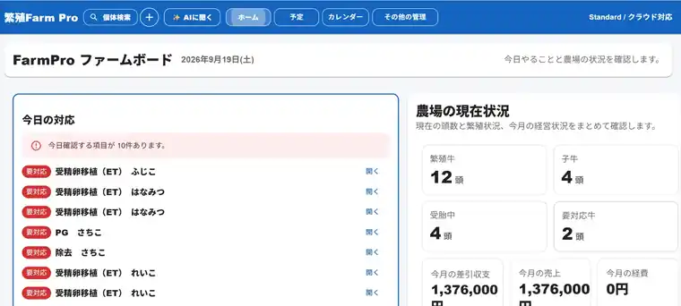

FreeFarmProを教えてくれるAI
操作方法、画面の意味、設定項目、注意表示などを案内します。
例：「牛の登録方法は？」
農家が作った、農家のための農場管理アプリ。
紙の記録から、FarmProへ。個体・繁殖・治療・子牛・予定・経営を、FarmProひとつで。
今の状態と、次にやることが分かります。
繁殖雌牛10頭まで無料。クレジットカード不要。


マニュアルを探さなくても大丈夫です。たとえば「牛の登録方法は？」と入力すれば、FarmProの画面に合わせて操作手順を案内します。
操作方法、画面の意味、設定項目、注意表示などを案内します。
登録済みの牛や農場データを使った質問にも対応します。
AIが正式な記録を勝手に変更・確定することはありません。
日々の記録を、個体の履歴・次の予定・注意牛・経営状況までつなげます。
牛ごとの繁殖状況、治療履歴、子牛の状態をまとめて確認できます。
近日の対応や予定から、次に見る牛・次にする作業を確認できます。
要対応の牛を埋もれさせず、優先して確認できるようにします。
売上・経費・収支までつなげて、農場全体の状況を確認できます。
繁殖の記録を一つずつつなげることで、前回の経過と次に行う作業を迷わず確認できます。
発情日を記録し、次の授精・ETにつなげます。
授精日・種雄牛などを個体ごとに記録します。
ETの実施内容を記録し、次の鑑定予定へつなげます。
鑑定結果を確認し、分娩予定へつなげます。
分娩記録を母牛・子牛の管理へつなげます。
牛台帳、子牛管理、成長記録。
治療履歴、投薬、休薬情報。
飼料在庫、給与量、個体別原価。
販売、生産費、月別収支、経営確認。
PCでは一覧を大きく確認。スマホでは現場ですぐ記録・確認。FarmProを同じ考え方で使えます。
まずは無料で登録して、牛を入れて、FarmProを実際の農場で試してください。
メールアドレスなど必要な情報を入力して、FarmProを始めます。
牛台帳から登録するか、スマホで牛情報を取り込みます。
繁殖・治療・予定・経営を記録しながら、FarmProが農場に合うか確認します。
はい。FreeでもFarmProの使い方・設定・画面操作をAIに質問できます。
ありません。AIは操作案内や確認を補助する役割で、正式な記録を勝手に変更・確定しません。
繁殖雌牛10頭までなら、期間の制限なく無料で利用できます。
なりません。有料プランを使う場合は、ご自身で申し込み手続きを行います。
主な違いは登録できる繁殖雌牛の頭数です。Standardは11〜50頭、Proは51頭以上です。
料金、使い方、利用環境など、気になることがあればお問い合わせください。